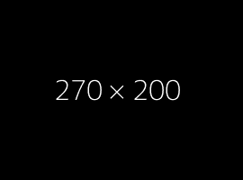

see
Hey There,
I'm Lehi
I make complexity feel simple. And I’m hooked on the process.
I create with precision and vision. And I learn with every step.
FRESHGRADUATE

About me
I'm Lehi Galabo. I’m a fresh graduate in Information Systems with a passion for turning
ideas into clean, functional websites. I enjoy solving tricky problems, refining user experiences,
and learning something new with every project. Whether I’m debugging code or designing a layout,
I aim to make things feel simple and intuitive. I believe in growing through the process, staying
curious, and always building with purpose.
I completed my Bachelor of Science in Information Systems at Kolehiyo ng Lungsod ng
Dasmariñas, where I gained hands-on experience through an internship and a capstone project focused on
responsive websites and database-driven systems. Along the way, I developed strong skills in troubleshooting,
system maintenance, and user support.
Projects

KLD Evaluation System
A responsive web app for managing student and faculty evaluations, built with HTML, CSS, JavaScript, and PHP/MySQL. Designed for usability, accuracy, and clean reporting.
Peer Cargo Movers website
A responsive web app for managing student and faculty evaluations, built with HTML, CSS, JavaScript, and PHP/MySQL. Designed for usability, accuracy, and clean reporting.
Youtube UI
A responsive web app for managing student and faculty evaluations, built with HTML, CSS, JavaScript, and PHP/MySQL. Designed for usability, accuracy, and clean reporting.
Amazon Simple Projects
A responsive web app for managing student and faculty evaluations, built with HTML, CSS, JavaScript, and PHP/MySQL. Designed for usability, accuracy, and clean reporting.
KLD Evaluation System
A responsive web app for managing student and faculty evaluations, built with HTML, CSS, JavaScript, and PHP/MySQL. Designed for usability, accuracy, and clean reporting.
KLD Evaluation System
A responsive web app for managing student and faculty evaluations, built with HTML, CSS, JavaScript, and PHP/MySQL. Designed for usability, accuracy, and clean reporting.
Contact